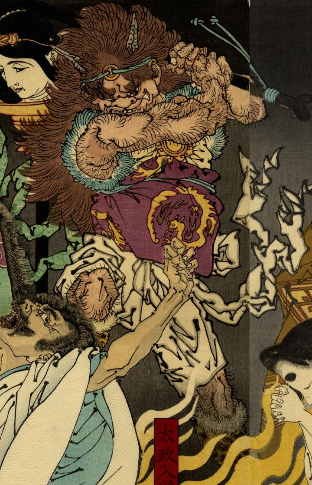

黒い棒を振り上げる鬼。頭には2本の角が生え、髪は茶色く長い。体毛が濃く、口には鋭い牙が生えている。龍柄をあしらった胴当を身に着けている。
著作者：芳年／出典：親書誌：U426_nichibunken_0302：平清盛炎燒病之圖；タイラノ キヨモリ ヒ ノ ヤマイ ノ ズ／日付：2014／資源識別子：U426_nichibunken_0302_0002_0000
Copyright (c)2010- International Research Center for Japanese Studies, Kyoto, Japan. All rights reserved.